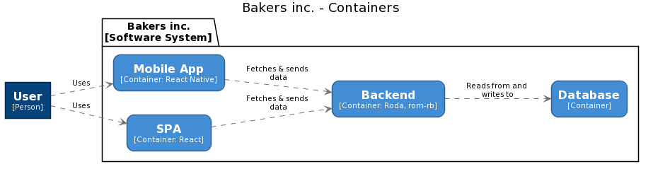
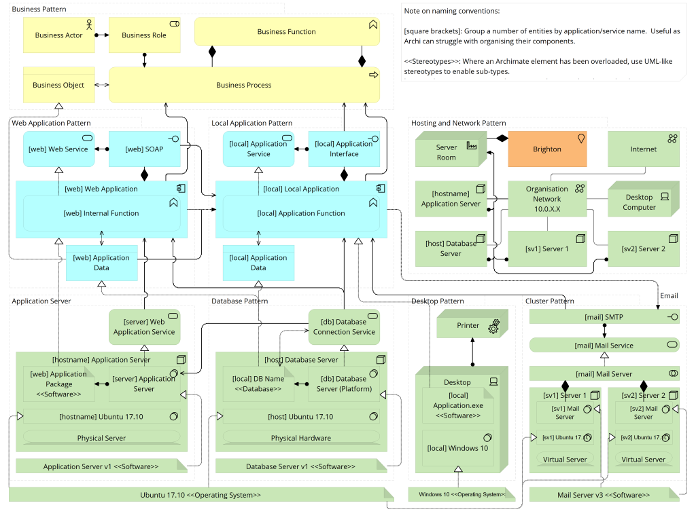

<!DOCTYPE html>
<html lang="en">
  <head>
    <meta charset="utf-8" />
    <meta name="viewport" content="width=device-width, initial-scale=1.0, maximum-scale=1.0, user-scalable=no" />

    <title>reveal-md</title>
    <link rel="stylesheet" href="./css/reveal.css" />
    <link rel="stylesheet" href="./css/theme/black.css" id="theme" />
    <link rel="stylesheet" href="./css/highlight/zenburn.css" />
    <link rel="stylesheet" href="./css/print/paper.css" type="text/css" media="print" />

  </head>
  <body>
    <div class="reveal">
      <div class="slides"><section  data-markdown><script type="text/template">

<style type="text/css">
  .hljs {
    background: transparent;
  }

  .reveal pre {
    box-shadow: none;
  }

  .reveal blockquote {
    background: transparent;
    border: none;
  }

  img {
    max-height: 600px !important;
    width: auto !important;
  }

  .green {
    color: lightgreen;
  }

  h1, h2, h3, h4, h5, h6 {
    text-transform: none !important;
  }
</style>


## Модель С4

Зачем нам моделировать архитектуру
</script></section><section  data-markdown><script type="text/template">
## Я — Игорь

* В руби с 2016
* Писал на всяком, в основном на руби
* Не очень хорош с рельсой
* ❤️  энтерпрайзную разработку
* Делаю Bookmate.com
</script></section><section  data-markdown><script type="text/template">
## О чём не будем говорить

* Микросервисы или монолиты
* Чистая архитектура
* Шаблоны проектирования
* Domain-Driven Design
* Монады
* dry-rb / rom-rb / hanami / rails
</script></section><section  data-markdown><script type="text/template">
## О чём поговорим

* Что такое архитектура
* Как мы обычно с ней работаем (\*)
* Как сделать левелап при помощи моделирования

<small>\* по крайней мере, я</small>
</script></section><section  data-markdown><script type="text/template">
## Что такое архитектура
</script></section><section  data-markdown><script type="text/template">
## Это архитектура 


```ruby
class Person
  ... # methods here
end

class Admin < Person
end

class Customer < Person
end
```
</script></section><section  data-markdown><script type="text/template">

## Это тоже архитектура 


</script></section><section  data-markdown><script type="text/template">
## И это 


<small><code>https://youtu.be/jlPaby7suOc</code></small>
</script></section><section  data-markdown><script type="text/template">
## Снова архитектура 


</script></section><section  data-markdown><script type="text/template">
## Архитектура!


</script></section><section  data-markdown><script type="text/template">
## Всё это архитектура
</script></section><section  data-markdown><script type="text/template">
## Что такое архитектура?
</script></section><section  data-markdown><script type="text/template">
> The software architecture of a system depicts the system’s organization or structure, and provides an explanation of how it behaves.

Synopsis
</script></section><section  data-markdown><script type="text/template">
> Architecture is the fundamental organization of a system, embodied in its components, their relationships to each other and the environment, and the principles governing its design and evolution

ISO/IEC/IEEE 42010
</script></section><section  data-markdown><script type="text/template">
> In most successful software projects, the expert developers working on that project have a shared understanding of system design. This shared understanding is called ‘architecture.’

Martin Fowler
</script></section><section  data-markdown><script type="text/template">
> Architecture is about the important stuff. Whatever that is

Ralph Johnson
</script></section><section  data-markdown><script type="text/template">
## Архитектура — о проблемах на разном уровне
</script></section><section  data-markdown><script type="text/template">
## Как мы с этим обычно работаем
</script></section><section  data-markdown><script type="text/template">
## Типичные сценарии

* Думаем о рефакторинге
* Придумываем, как добавить фичу
* Исследуем
* Аудит
* Онбординг
</script></section><section  data-markdown><script type="text/template">
## Что мы делаем

* Смотрим, как что-то устроено
* Придумываем, как что-то должно быть устроено
* Рассказываем об этом
</script></section><section  data-markdown><script type="text/template">
## Проблема: разрозненность информации
</script></section><section  data-markdown><script type="text/template">
## Проблема: не тот уровень абстракции
</script></section><section  data-markdown><script type="text/template">
## Проблема: нет единого языка
</script></section><section  data-markdown><script type="text/template">
## Результат

* Одна диаграмма
* С кучей квадратиков
* И стрелочек
* В некоторых квадратиках есть другие квадратики
</script></section><section  data-markdown><script type="text/template">
## Решение: система

Добавляем квадратикам смысл и правила
</script></section><section  data-markdown><script type="text/template">
## Модель C4

Абстракции + принципы
</script></section><section  data-markdown><script type="text/template">
## Пример: Baqers

Система для заказа выпечки
</script></section><section  data-markdown><script type="text/template">
## Верхний уровень: Software&nbsp;System

Система приносит ценность. Человеку или машине
</script></section><section  data-markdown><script type="text/template">
<!-- .slide: data-background="img/SystemLandscape.png" -->
</script></section><section  data-markdown><script type="text/template">
## Следующий уровень: контейнеры

Приложения и базы данных

Если есть процесс — это контейнер
</script></section><section  data-markdown><script type="text/template">
<!-- .slide: data-background="img/Container.png" -->
</script></section><section  data-markdown><script type="text/template">
## Ещё глубже: компоненты

Суть компонентов определяем сами

Примеры: неймспейсы, функции, классы, связанные контексты
</script></section><section  data-markdown><script type="text/template">
<!-- .slide: data-background="img/Component.png" -->
</script></section><section  data-markdown><script type="text/template">
## Дальше только код

UML и всё такое
</script></section><section  data-markdown><script type="text/template">
## Модель загоняет в рамки
</script></section><section  data-markdown><script type="text/template">
## Нам не нужны технологии

Листок бумаги, ручка и мышление
</script></section><section  data-markdown><script type="text/template">
## Базовые принципы

* Самое важное — пользователи, системы, контейнеры и компоненты
* Рисуешь квадратик — подпиши
* У связей тоже есть технологии
* Несколько диаграмм — хорошо
</script></section><section  data-markdown><script type="text/template">
## Дальше — практика и опыт

И взаимопонимание
</script></section><section  data-markdown><script type="text/template">
## Моделировать можно кодом

Java, C#, TypeScript, Python, скоро и JRuby

... но про это в другой раз
</script></section><section  data-markdown><script type="text/template">
## Итоги
</script></section><section  data-markdown><script type="text/template">
## Архитектура — про важное, что бы это ни было

А ещё про составные части, связи между ними и принципы
</script></section><section  data-markdown><script type="text/template">
## Архитектор — это профессия

Но роль архитектора занимают опытные программисты
</script></section><section  data-markdown><script type="text/template">
## Приходится изучать, придумывать и рассказывать
</script></section><section  data-markdown><script type="text/template">
## Важно быть на нужном уровне абстракции

Как при изучении, так и при рассказе
</script></section><section  data-markdown><script type="text/template">
## Нужна система

Например, модель C4
</script></section><section  data-markdown><script type="text/template">
## Модель даёт нам абстракции и принципы

И становится проще понимать друг друга
</script></section><section  data-markdown><script type="text/template">
## А ещё можно делать кодом
</script></section><section  data-markdown><script type="text/template">
# Спасибо! 💚

* c4model.com
* t.me/saintprug/60354
* git.io/JTDcl ← gist с моделью

</script></section></div>
    </div>

    <script src="./js/reveal.js"></script>

    <script>
      function extend() {
        var target = {};
        for (var i = 0; i < arguments.length; i++) {
          var source = arguments[i];
          for (var key in source) {
            if (source.hasOwnProperty(key)) {
              target[key] = source[key];
            }
          }
        }
        return target;
      }

      // Optional libraries used to extend on reveal.js
      var deps = [
        { src: './plugin/markdown/marked.js', condition: function() { return !!document.querySelector('[data-markdown]'); } },
        { src: './plugin/markdown/markdown.js', condition: function() { return !!document.querySelector('[data-markdown]'); } },
        { src: './plugin/highlight/highlight.js', async: true, callback: function() { hljs.initHighlightingOnLoad(); } },
        { src: './plugin/zoom-js/zoom.js', async: true },
        { src: './plugin/notes/notes.js', async: true },
        { src: './plugin/math/math.js', async: true }
      ];

      // default options to init reveal.js
      var defaultOptions = {
        controls: true,
        progress: true,
        history: true,
        center: true,
        transition: 'default', // none/fade/slide/convex/concave/zoom
        dependencies: deps
      };

      // options from URL query string
      var queryOptions = Reveal.getQueryHash() || {};

      var options = extend(defaultOptions, {"transition":"none","slideNumber":"c/t"}, queryOptions);
    </script>


    <script>
      Reveal.initialize(options);
    </script>
  </body>
</html>
